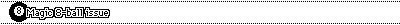
Alive in the Library of Form.
What can be said when everything has already been said?
The Situationist City - Recombinant City Walks.
Mindframes for recovering lost city ground. Learn to take advantage of nothingness!
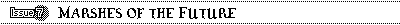
Interview with kode9.
The slickest theory factory on earth unloads their wisdom on the hapless powerbase infodroids.
So you want to join a pseudo-religious movement?
Take a trip to the bleeding edge of post-millenial cults.
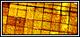
Living furniture.
Because you want your home to be alive.
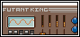
Excerpts from the Library of the Futant King.
Myths of the near future, skimmed from the king's own fermentation vat.
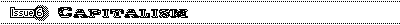
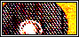
Adhacking
Ecstatic Statistics
Japanese Consumer Culture
Streamlining the Corp
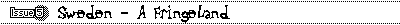
Svista Värdshus
HCentrum
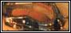
Bromma Flygplats
Kaknästornet
Chinese SF
a no-shit guide to Chinese science fiction, tracing the roots of this unknown literature
Hacking the Chinese City
our reporter tells us about his experiences in the great capital
Urban adventuring, Ballard style
paranoia confirmed. Our intrepid reporter gets more than he bargained for.
68 hour road trip
the mother of all busrides, an experiment in time-travel
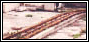
Ode to the Lijiang Amusement Park
the great old rusty park that brings back so much memories and asks so important questions.
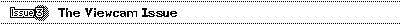
The Morse Interface
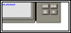
Religious use of the Internet
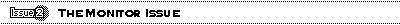
Introduction A-Z of Interesting futures
VR soap - the confessions of a spook
What is that noise?
Pranayama touchpad...
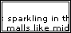
A trip to ballardland
Sprawl technology...
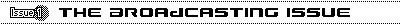
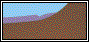
THE LAB: DIY hologram projector
You always wanted one... now here it is, lightweight, easy to build, cheap...
CULTURAL ELITE: The Eccentric Archetype
A treatise on Eccentricity, which discusses the most frequent caracter traits among eccentrics
RANTERS CORNER: The Compleat Nail Addict
The bible of covert culture drug addicts, unabridged and HTMLized!
THE SCAM: Disgusting Drinks
Is it really true there's such a thing as a disgusting drink? Are we being misled by THEM?
SARGENTS FASHION: Sargent Alphas Fashion Watch
An automatically updated news ticker which brings you the very latest in fashion worldwide